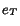
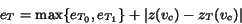

The error metrics employed in our framework are similar to the nested error bounds used in the ROAM system. Each cell has two associated kinds of error values, field errors and material interface errors. In order to calculate the field errors for a leaf cell in our tetrahedral mesh hierarchy, we assume that the original data set can be divided into native data elements. Each of these is presumed to have a well-defined spatial extent and a well-defined representation for each field of interest over its spatial domain. The simplest example of a native data element is just a grid point that holds field values. Other possibilities are blocks of grid points treated as a unit, cells with a nonzero volume and a field representation defined over the entire cell, or blocks of such cells. Each leaf cell in our multiresolution mesh maintains links to the native data elements with which it intersects. We assume that it is possible to bound the difference between our representation of a given field over one of our leaf cells and the representation of the same field over each of the native data elements with which the given cell intersects. The error for the given field in the given cell is then just the maximum of the errors associated with each of the intersecting native data elements. Currently, we are dealing only with native data elements that are grid points of zero volume.
The field error  for a non-leaf cell is computed from the errors
associated with its two children according to:
|  | (1) |
The material interface error associated with a leaf node is the maximum value of the errors associated with each of the material interfaces in the node. For each material interface, the error is the maximum value of the errors associated with the vertices constituting the triangle mesh defining the interface and being inside the cell. The error of a vertex is the absolute value of the distance between the vertex and the interface approximation. The material interface error of E for a cell guarantees that no point in the original interface polygon mesh is further from its associated approximation that a distance of E. This error metric is an upper bound on the deviation of the original interfaces from our approximated interfaces. A cell that does not contain a material interface is considered to have an interface error of zero.